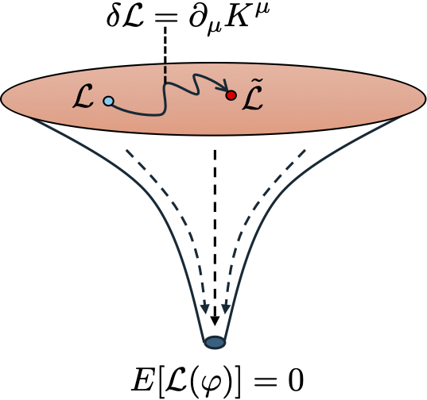
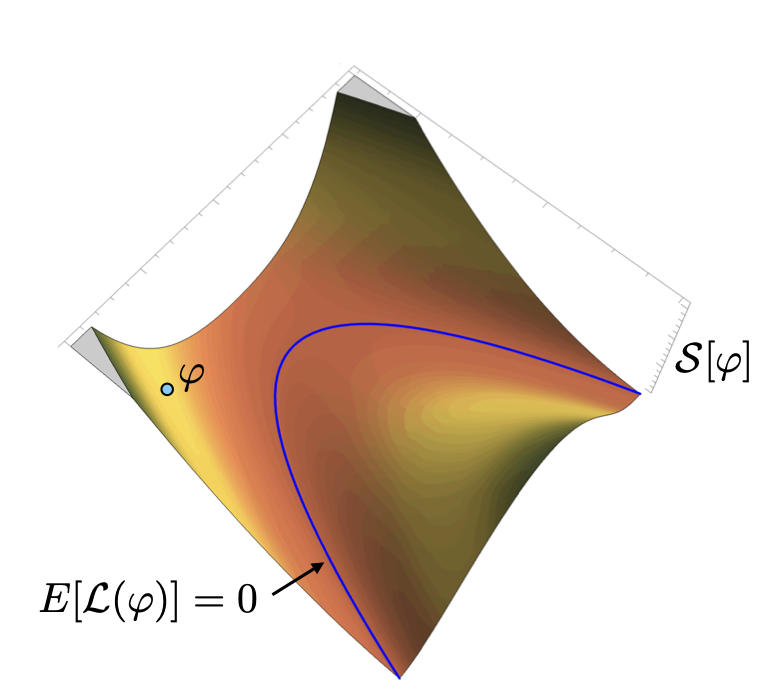
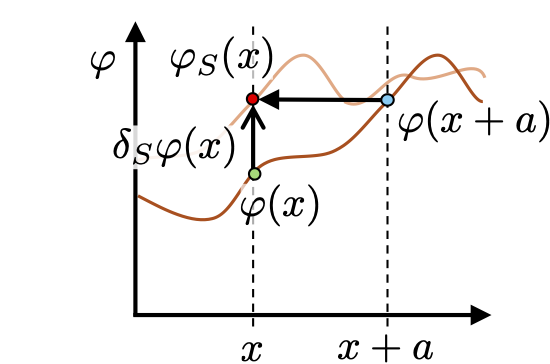
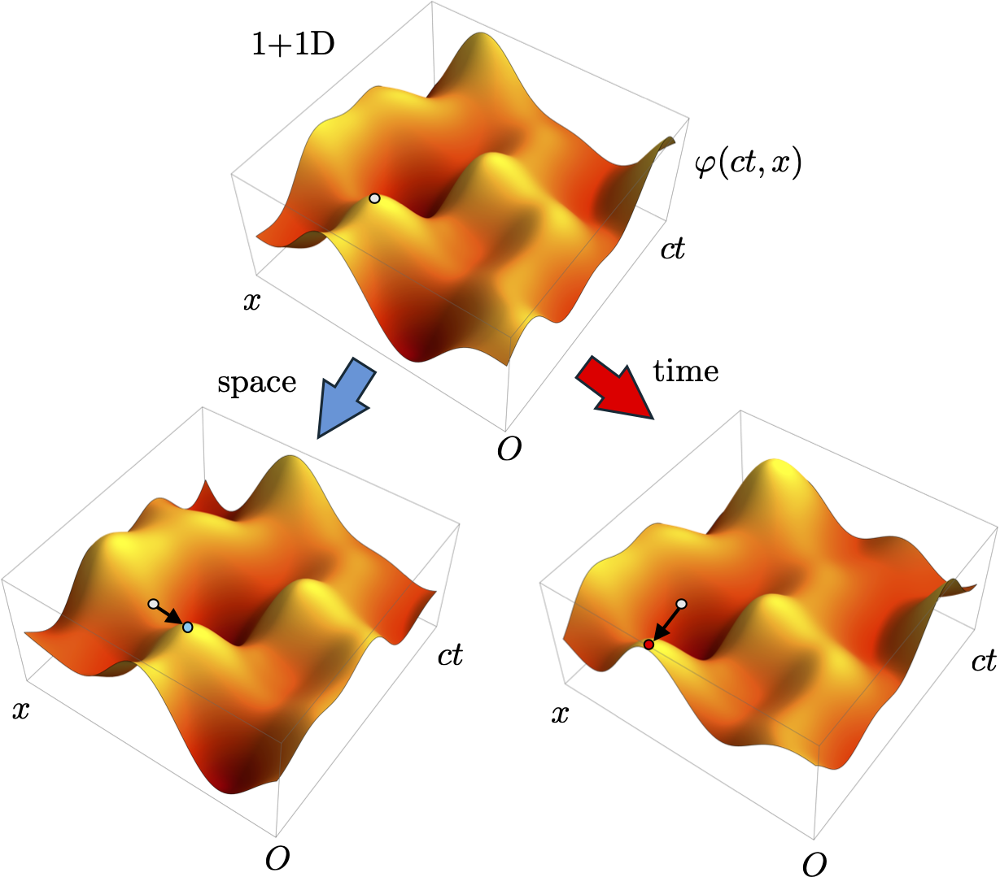

10 Symmetries and Noether’s theorem
In this lecture we will generalise the beautiful and powerful result of Noether’s theorem you encountered in the Analytical Mechanics module to fields and use it to derive the stress-energy tensor for a scalar field.
10.1 Non-uniqueness of Lagrangians
The physics of a field theory is defined by its equations of motion. Those equations of motion arise from the Lagrangian \(\mathcal{L}\) via the relativistic Euler-Lagrange equation which we will express as: \[ E[\mathcal{L}(\varphi)] = \frac{\partial \mathcal{L}}{\partial\varphi} - \partial_\mu\frac{\partial \mathcal{L}}{\partial\partial_\mu\varphi} = 0, \tag{10.1}\] defining the \(E[\mathcal{L}(\varphi)]\) is the Euler-Lagrange differential operator in \(\mathcal{L}\). However, the connection between equations of motion \(E[\mathcal{L}(\varphi)] = 0\) and the Lagrangian \(\mathcal{L}\) generating them is not unique. As we shall see, we can construct many other Lagrangians \(\tilde{\mathcal{L}}\) which generate exactly the same equations of motion \(E[\mathcal{L}(\varphi)] = E[\tilde{\mathcal{L}}(\varphi)]\).
Suppose we have \(\mathcal{L}\) giving an equation of motion Equation 10.1, but we modify the Lagrangian to get a new one \[ \tilde{\mathcal{L}}(x,\varphi,\partial\varphi,\partial\partial\varphi) = \mathcal{L}(x,\varphi,\partial\varphi) + \partial_\mu K^\mu(x,\varphi,\partial\varphi), \tag{10.2}\] where we have added a new term which is the 4-divergence of some 4-vector field \(K^\mu\) which can depend on the space-time \(x\), field \(\varphi\) and its derivative \(\partial_\mu\varphi\). The dependence on the derivative is a non-trivial feature because after taking the 4-divergence it allows \(\tilde{\mathcal{L}}\) to depend on the second derivative. In the last lecture we rejected such Lagrangians on stability grounds, but here we will entertain this special class of Lagrangians and see what we obtain.

Our new Lagrangian \(\tilde{\mathcal{L}}\) is defined over the same 4-volume \(\Omega\) and inherits the same boundary conditions on \(\partial \Omega\) as \(\mathcal{L}\). However, being higher-order it has altered the variational problem and as a consequence we need to strenghen what we mean by boundary vanishing variations:
To find the equations of motion arising from \(\tilde{\mathcal{L}}\) we again perform boundary vanishing variations of the field \(\varphi(x)\) for its action \[ \tilde{\mathcal{S}}[\varphi] = \int_\Omega {\rm d}^4 x \,\tilde{\mathcal{L}}(x,\varphi,\partial\varphi,\partial\partial\varphi). \] Using Equation 10.2 the variation in the action \(\delta\tilde{\mathcal{S}}[\varphi,\delta\varphi]\) due to a general field variation \(\delta\varphi(x)\) splits into two contributions \[\begin{align} \delta\tilde{\mathcal{S}}[\varphi,\delta\varphi] &= \int_{\Omega} {\rm d}^4x\, \left\{\mathcal{L}(x,\varphi+\delta\varphi,\partial(\varphi + \delta\varphi)) - \mathcal{L}(x,\varphi,\partial\varphi)\right\} \\ & \qquad + \oint_{\partial\Omega} {\rm d}^3S\,n_\mu\left\{K^\mu(x,\varphi+\delta\varphi,\partial\varphi+\partial\delta\varphi) - K^\mu(x,\varphi,\partial\varphi) \right\}, \end{align}\] after applying the 4-divergence theorem to the last term converting it into a boundary surface integral. Next, we replace the first term with the result of a general variation of the action from the last lecture to give: \[\begin{align} \delta\tilde{\mathcal{S}}[\varphi,\delta\varphi] &= \int_{\Omega} {\rm d}^4x\, \left(\frac{\partial \mathcal{L}}{\partial\varphi} - \partial_\mu\frac{\partial \mathcal{L}}{\partial\partial_\mu\varphi}\right)\delta\varphi \\ & + \oint_{\partial\Omega} {\rm d}^3S\,n_\mu\left\{K^\mu(x,\varphi+\delta\varphi,\partial\varphi+\partial\delta\varphi) - K^\mu(x,\varphi,\partial\varphi) + \frac{\partial \mathcal{L}}{\partial\partial_\mu\varphi}\delta\varphi \right\}. \end{align}\] If we now specialise to boundary vanishing variations of the field \(\delta_b\varphi(x)\) given in Equation 10.3 then the integrand of the boundary surface integral vanishes since \[ K^\mu(x,\varphi+\delta_b\varphi,\partial\varphi+\partial\delta_b\varphi) - K^\mu(x,\varphi,\partial\varphi) = 0, \quad \forall x \in \partial\Omega. \] Consequently \[ \delta\tilde{\mathcal{S}}[\varphi,\delta_b\varphi] = \int_{\Omega} {\rm d}^4x\, \left(\frac{\partial \mathcal{L}}{\partial\varphi} - \partial_\mu\frac{\partial \mathcal{L}}{\partial\partial_\mu\varphi}\right)\delta_b\varphi, \] so Hamilton’s principle \(\delta\tilde{\mathcal{S}}[\varphi,\delta_b\varphi] = 0\) implies Equation 10.1 applies everywhere in the bulk of \(\Omega\). We have therefore found that \(\tilde{\mathcal{L}}\) and \(\mathcal{L}\) are equivalent Lagrangians for boundary vanishing variations and so both generate the same equations of motion \(E[\mathcal{L}(\varphi)] = E[\tilde{\mathcal{L}}(\varphi)]\).

Although \(\tilde{\mathcal{L}}\) was technically a higher-order Lagrangian it was special in that it still generates the same first-order Euler-Lagrange equations as \(\mathcal{L}\). The reason for this is that the equivalence class of Lagrangians in Equation 10.2 only add a 4-divergence term. This is special since it only shifts the value of the \(\tilde{\mathcal{S}}[\varphi]\) for any field \(\varphi(x)\) in the theory since \[ \tilde{\mathcal{S}}[\varphi] = \int_\Omega {\rm d}^4 x \,\mathcal{L}(x,\varphi,\partial\varphi) + \oint_{\partial\Omega} {\rm d}^3 S n_\mu K^\mu(x,\varphi,\partial\varphi). \] Consequently, the value of \(\tilde{\mathcal{S}}[\varphi]\) only differs from \(\mathcal{S}[\varphi]\) by a boundary term on \(\partial\Omega\) which is a constant fixed by the boundary conditions. Shifting the value of \(\tilde{\mathcal{S}}[\varphi]\) does not change its stationary points compared to that of \(\mathcal{S}[\varphi]\). So for the picture in Figure 10.1 the surface is shifted but the curve representing \(E[\mathcal{L}(\varphi)]=0\) is unchanged.
10.2 Symmetries of a system
A system is said to possess a symmetry if there is an active transformation we can perform on the fields which leaves the equations of motion unchanged. Examples:
- Space-time translation - (see shortly).
- Lorentz transformations - includes spatial rotations and Lorentz boosts.
- Internal field rotations - applies to multicomponent scalar fields describing internal degrees of freedom (see Example class).
All these examples are continuous transformations, meaning you can do a small amount of them such that they all smoothly connect to the identity (do nothing) transformation. In contrast parity or reflections are discrete transformations where you either apply them or not. Here we will concentrate on the former.
Applying a continuous symmetry transformation \(S\) to the system induces a new class of field variation called a symmetry induced variation. Specifically:
This new class of variations is very different to \(\delta_b\varphi(x)\) used earlier. The variation \(\delta_S\varphi(x)\) is generated by a symmetry transformation \(S\) and does not have to vanish at the boundary \(\partial\Omega\). So when is a transformation \(S\) a symmetry of the system?
We can answer this precisely by working out how the Lagrangian and action of a system varies when a symmetry induced variation of the field is applied: \[ \delta\mathcal{L}(x,\varphi,\partial\varphi,\delta_S\varphi) = \mathcal{L}(x,\varphi+ \delta_S\varphi,\partial(\varphi + \delta_S\varphi)) - \mathcal{L}(x,\varphi,\partial\varphi), \] and correspondingly \[ \delta\mathcal{S}[\varphi,\delta_S\varphi]= \int_\Omega {\rm d}^4 x \, \delta\mathcal{L}(x,\varphi,\partial\varphi,\delta_S\varphi). \] The following result applies:
Our work in the previous section immediately motivates this very general definition of a symmetry. The application of a symmetry transformation alters the Lagrangian inside the equivalence class Equation 10.2 and therefore leaves the equations of motion unchanged. It is worth considering a simple special case of Equation 10.5:
- Invariance - The simplest symmetry induced variation of a Lagrangian is that the Lagrangian is invariant and so unchanged \[ \mathcal{L}_S(x,\varphi,\partial\varphi) = \mathcal{L}(x,\varphi,\partial\varphi). \] This is a very strong form of symmetry and it is clear in this case that the equations of motion are unchanged. Nonetheless this special case illustrates a crucial point, namely that the variation of the Lagrangian does not uniquely specify the 4-vector field \(\mathcal{J}_S^\mu(x,\varphi,\partial\varphi)\). All a symmetry invariance tells us is that it is 4-divergence free. Now we may be able to find a specific \(\mathcal{J}_S^\mu(x,\varphi,\partial\varphi)\) which has dependence on the field and its derivative which satisfies this (see next section), but the Lagrangian variation itself is of no help in pinning this down. Without further information we might as well assume there is no field dependence leaving us with \(\mathcal{J}_S^\mu(x)\) that depends only on space-time. We can easily construct an entire class of space-time dependent 4-divergence free 4-vector field (see next work-along exercise). But at no point would does the physics of our actual field theory enter this choice, so the only sensible approach is to pick the simplest option where \(\mathcal{J}_S^\mu(x) = 0\) whenever we have symmetry invariance.
Take the scalar field Lagrangian \(\mathcal{L} = \partial_\mu\varphi\partial^\mu\varphi\) we saw in the last lecture as generating the wave-equation. This system admits a simple symmetry transformation \[ S: \varphi(x) \mapsto \varphi(x) + \tau, \] where \(\tau\) is a Lorentz scalar constant. Conrrespondingly the Lagrangian changes as \[ \mathcal{L}_S = \partial_\mu(\varphi+\tau)\partial^\mu(\varphi+\tau) = \partial_\mu\varphi\partial^\mu\varphi = \mathcal{L}, \] so in invariant. What we have established here is that the wave-equation is unchanged by changing the “zero” value of the field which it oscillates about. We will return to this example in the next section.
Our definition of symmetry in Equation 10.5 is more general and powerful than simple invariance. We shall see shortly that we need this to capture space-time translational symmetry.
We have stated that an active symmetry transformation on the field induces a first-order change in the Lagrangian which is a 4-divergence. We then effectively solved the variational problem again for this new Lagrangian \(\mathcal{L}_S\) and showed it gave the same Euler-Lagrange equations due to our non-uniqueness result. However, technically this requirement is too strong. Both Equation 10.5 and Equation 10.6 still define a symmetry but we don’t need the symmetry varied Lagrangian \(\mathcal{L}_S\) to generate the same Euler-Lagrange equations. A weaker definition of a symmetry is that if \(S\) is a symmetry transformation then we require that the given a solution to the Euler-Lagrange equations \[ E[\mathcal{L}(\varphi_*)] = 0, \] then the symmetry induced variation of the field is also a solution to the same equations of motion: \[ E[\mathcal{L}(\varphi_* + \delta_S\varphi)] = 0 + \mathcal{O}(\delta_S\varphi^2), \] to first-order in the variation. In the picture in Figure 10.1 this means \(\delta_S\varphi\) moves fields tangentially with the curve \(E[\mathcal{L}(\varphi)] = 0\). In fact this type of variation to a solution is called an on-shell symmetry induced variation as defined shortly in Equation 10.10. In short a symmetry maps solutions of the equations of motion to other solutions. This is conceptually different to the non-uniqueness equivalence class we used. The reason we applied a stricter definition is purely pedagogical. We get to the exactly same result quicker and with less fuss by only making the boundary condition mildly stronger.
10.3 Noether’s theorem
We are now in a position to derive Noether’s theorem. You have seen this already in Analytical Mechanics. The relativistic formulation of the theorem is:
As we saw in Plane-waves and particle flow a 4-divergence free 4-current \(j^\mu\) corresponds to a continuity equation if we expand into components \[ \partial_0j^0(x) + \partial_i j^i(x) = 0 \] and then decompose the 4-current as \[ j^{\mu}(x) = \left(\begin{array}{c} \rho(x)c \\ {\boldsymbol{j}}(x)\end{array}\right), \tag{10.8}\] where \(\rho(x)\) is the “charge” density and \(\boldsymbol{j}(x)\) is the 3-current density giving \[ \frac{\partial}{\partial t}\rho({\boldsymbol{r}},t) + \nabla \cdot {\boldsymbol{j}}({\boldsymbol{r}},t) = 0, \tag{10.9}\] We can also write Equation 10.9 in integral form by integrating over a spatial 3-volume \(\mathcal{V}\) as \[ \frac{\partial}{\partial t}\int_\mathcal{V} {\rm d}^3\boldsymbol{r}\, \rho(x) + \oint_\mathcal{V} {\rm d}^3\boldsymbol{r}\,\nabla \cdot {\boldsymbol{j}}({\boldsymbol{r}},t) = 0. \] which subsequently and using the divergence theorem as \[ \frac{\partial}{\partial t}Q(t) = -\oint_\mathcal{\partial V} {\rm d}^2S \, \boldsymbol{n} \cdot {\boldsymbol{j}}({\boldsymbol{r}},t), \]
where \(Q(t) = \int_\mathcal{V} {\rm d}^3\boldsymbol{r}\,\rho({\boldsymbol{r}},t)\) is the charge enclosed in \(\mathcal{V}\). The rate of change of \(Q(t)\) is therefore given by the flow of current across the surface \(\partial \mathcal{V}\) of the 3-volume \(\mathcal{V}\). In relativistic notation we will retain the factor of \(c\) and define the conserved Noether charge as \[ Q(t) = \int_\mathcal{V} {\rm d}^3\boldsymbol{r}\,j^0({\boldsymbol{r}},t). \]
Our aim is to find an expression for \(j^\mu(x)\) which explicitly depends on the field \(\varphi(x)\) and/or its derivatives. To do this we will combine symmetry induced variations with solutions to the Euler-Lagrange equation found from boundary vanishing variations. This gives another very specialised type of field variation
Now from the last lecture we know that a general variation of a Lagrangian is: \[ \delta\mathcal{L}(x,\varphi,\partial\varphi,\delta\varphi) = E[\mathcal{L}(\varphi)]\delta\varphi + \partial_\mu\left(\frac{\partial \mathcal{L}}{\partial\partial_\mu\varphi}\delta\varphi\right), \] however, we are performing a symmetry induced variation \(\delta_S\varphi_*(x)\) about a solution of the Euler-Lagrange equations \(\varphi_*(x)\). Consequently, \(E[\mathcal{L}(\varphi_*)]= 0\) by construction making the first term vanish so \[ \delta\mathcal{L}(x,\varphi_*,\partial\varphi_*,\delta_S\varphi_*) = \partial_\mu\left(\frac{\partial \mathcal{L}}{\partial\partial_\mu\varphi_*}\delta\varphi_*\right). \] But, since this is a symmetry induced variation we also know from Equation 10.5 that independently \[ \delta\mathcal{L}(x,\varphi_*,\partial\varphi_*,\delta_S\varphi_*) = \partial_\mu\mathcal{J}_S(x,\varphi_*,\partial\varphi_*). \] Equating these two expressions thus implies that locally \[ \partial_\mu\left(\frac{\partial \mathcal{L}}{\partial\partial_\mu\varphi_*}\delta_S\varphi_* - \mathcal{J}_S(x,\varphi_*,\partial\varphi_*)\right) = 0, \] and hence we have identified a 4-divergence free 4-current associated to this symmetry:
Notice in Equation 10.11 we have dropped the \(\varphi_*\) notation and just use \(\varphi\) for brevity. However, we should always keep in mind that the field \(\varphi(x)\) in Equation 10.11 is always a solution of the Euler-Lagrange equation, so is an on-shell field.
Let’s return to our scalar field Lagrangian \(\mathcal{L} = \partial_\mu\varphi\partial^\mu\varphi\) and its simple symmetry transformation \[ S: \varphi(x) \mapsto \varphi(x) + \tau, \] where \(\tau\) is a Lorentz scalar constant. We can now compute its associated Noether current and conserved charge. In this case \(\delta_S\varphi(x) = \tau\) and so \(\partial_\mu \delta_S\varphi(x) = 0\), along with \[ \frac{\partial \mathcal{L}}{\partial\varphi} = 0, \quad {\rm and} \quad \frac{\partial \mathcal{L}}{\partial\partial_\mu\varphi} = \partial^\mu\varphi. \] Now, from the Taylor expansion of \(\mathcal{L}\) for a general variation of the field we have the first-order variation as \[ \delta\mathcal{L}(x,\varphi,\partial\varphi,\delta\varphi) = \frac{\partial \mathcal{L}}{\partial\varphi}\delta\varphi + \frac{\partial \mathcal{L}}{\partial\partial_\mu\varphi}\partial_\mu\delta\varphi, \] which is evidently zero in this case with \(\delta\varphi = \delta_S\varphi\). From this we identify and choose \(\mathcal{J}_S^\mu(x) = 0\). The Noether 4-current associated with this symmetry is then \[ j^\mu(x) = \frac{\partial \mathcal{L}}{\partial\partial_\mu\varphi}\delta_S\varphi = \tau\partial^\mu\varphi(x). \] Since \(\tau\) is a small constant parameter usually it is dropped from the definition of the 4-current leaving \(j^\mu(x) = \partial^\mu\varphi(x)\). This 4-current should have zero divergence so we compute this to confirm \[ \partial_\mu j^\mu(x) = \partial_\mu\partial^\mu\varphi(x). \] This does indeed vanish if the field \(\varphi(x)\) is on-shell, so a solution to the Euler-Lagrange equation of \(\mathcal{L}\). In this case this is the wave-equation \(\partial_\mu\partial^\mu\varphi(x) = 0\), hence \(\partial_\mu j^\mu(x) = 0\). The conserved Noether charge in this case is then \[ Q(t) = \int_\mathcal{V} {\rm d}^3\boldsymbol{r}\,j^0({\boldsymbol{r}},t) = \int_\mathcal{V} {\rm d}^3\boldsymbol{r}\,\partial^0\varphi({\boldsymbol{r}},t) = \frac{1}{c}\int_\mathcal{V} {\rm d}^3\boldsymbol{r}\,\dot{\varphi}({\boldsymbol{r}},t). \] We see that this charge is essentially the canonical momentum of the scalar field whose density is given by \[ \pi(x) = \frac{\partial\mathcal{L}}{\partial\dot{\varphi}} = \frac{1}{c} \frac{\partial\mathcal{L}}{\partial\partial_0\varphi} = \frac{2}{c} \partial^0\varphi(x) = \frac{2}{c^2}\dot{\varphi}(x). \] We will encounter the canonical momentum density again shortly when we consider the Hamiltonian of a field theory in order to compute its energy.
10.4 Stress-energy tensor
Let’s finish this lecture by considering a very general symmetry, specifically space-time translational symmetry. Let’s suppose this symmetry \(S\) implements a backward shift in the space-time position as \[ S: x^\mu \mapsto x^\mu - a^\mu, \] via some constant 4-vector \(a^\mu\). There are two different ways we can view this. A passive trasnformation describes a change in the coordinate system, while the physical system is unchanged. Lorentz transformations between inertial frames are interpreted in this way. For symmetries we instead adopt an active transformation interpretation. The symmetry \(S\) is taken to shift the physical field backwards by \(a^\mu\) with the coordinate system unchanged. The corresponding symmetry induced variation of the field then \[ \varphi_S(x) = \varphi(S^{-1}(x)) = \varphi(x+a). \] As we discussed earlier the effect of a transformation is inverted inside arguments of a function. The following picture makes the reason for this clearer:

We assign the new field at point \(x\) a value \(\varphi_S(x)\) which must equal to old field at the point that was moved to \(x\) by \(S\), so \(\varphi(x+a)\). The symmetry induced variation is then \[ \varphi_S(x) = \varphi(x) + \delta_S\varphi(x). \] We now suppose that the shift \(a^\mu\) is small, so \(a_\mu a^\mu \ll 1\), meaning we can Taylor expand the symmetry varied field about \(x\) as \[ \varphi_S(x) = \varphi(x) + a^\mu \partial_\mu\varphi(x) + O(a^2). \] We therefore identify the symmetry induced variation to first-order in the shift as \[ \delta_S\varphi(x) = a^\mu \partial_\mu\varphi(x). \] Recall from the last lecture that Taylor expanding the Lagrangian for a general variation of the field \(\delta\varphi\) to first-order gives \[ \delta\mathcal{L}(x,\varphi,\partial\varphi, \delta\varphi) = \frac{\partial \mathcal{L}}{\partial\varphi}\delta\varphi + \frac{\partial \mathcal{L}}{\partial\partial_\mu\varphi}\partial_\mu\delta\varphi. \] Specialising to \(\delta\varphi = \delta_S\varphi\) we then get \[ \delta\mathcal{L}(x,\varphi,\partial\varphi, \delta_S\varphi) = a^\mu\left(\frac{\partial \mathcal{L}}{\partial\varphi}\partial_\mu\varphi + \frac{\partial \mathcal{L}}{\partial\partial_\mu\varphi}\partial_\mu\partial_\nu\varphi\right). \] To apply Noether’s theorem we need to write this change in the Lagrangian as a 4-divergence term.
We do this by considering the “total” partial derivative of \(\mathcal{L}(x)\) \[ \partial_\mu \mathcal{L}(x) = \partial_\mu\mathcal{L}(x,\varphi,\partial\mu) + \frac{\partial}{\partial\varphi}\mathcal{L}(x,\varphi,\partial\varphi) + \frac{\partial}{\partial\partial_\nu\varphi}\mathcal{L}(x,\varphi,\partial\varphi) \partial_\mu\partial_\nu\varphi. \] Here \(\partial_\mu\mathcal{L}(x,\varphi,\partial\mu)\) means the partial derivative of any dependence of the Lagrangian on space-time that is not contained in its dependence on the field or its derivative. Clearly if \(\mathcal{L}\) has such explicit dependence on space-time it cannot be translationally invariant to arbitrary shifts in space and time. Thus we have \[ \partial_\mu\mathcal{L}(x,\varphi,\partial\varphi) = 0, \] meaning \(\mathcal{L}(x,\varphi,\partial\mu) = \mathcal{L}(\varphi,\partial\mu)\). In this case \[ \partial_\mu \mathcal{L}(x) = \frac{\partial}{\partial\varphi}\mathcal{L}(\varphi,\partial\mu) + \frac{\partial}{\partial\partial_\nu\varphi}\mathcal{L}(\varphi,\partial\mu) \partial_\mu\partial_\nu\varphi, \] and we immediately identify \[ \delta\mathcal{L}(x,\varphi,\partial\varphi, \delta_S\varphi) = a^\mu \partial_\mu \mathcal{L}(x). \] In this case we see that the Lagrangian is not invariant to the symmetry transformation \(S\), so is a more complex situation. However, we can rewrite its variation as a 4-divergence term term with some index manipulation \[ \delta\mathcal{L}(x,\varphi,\partial\varphi, \delta_S\varphi) = a^\nu \partial_\mu\Big(\delta^\mu_\nu\mathcal{L}(x)\Big) = a^\nu \partial_\mu {\mathcal{J}_S^\mu}_\nu. \] We don’t just have one 4-divergence term, we have four 4-currents for \(\nu = 0,1,2,3\), one for each direction of space-time. The specific contribution depends on what direction the shift \(a^\mu\) points in.

Let’s now insert this result into the conserved 4-current Equation 10.11 resulting from Noether’s theorem. For a given \(a^\mu\) this leads to a conserved 4-current
\[ j^\mu = \frac{\partial \mathcal{L}}{\partial\partial_\mu\varphi}a^\nu\partial_\nu\varphi - a^\nu{\mathcal{J}_S^\mu}_\nu = a^\nu\left(\frac{\partial \mathcal{L}}{\partial\partial_\mu\varphi}\partial_\nu\varphi - \delta^\mu_\nu\mathcal{L}\right) = a^\nu {T^\mu}_\nu, \] where in the last step we have identified the canonical stress-energy tensor \({T^\mu}_\nu\). The conservation of this 4-current implies \[ \partial_\mu j^\mu = a^\nu\partial_\mu {T^\mu}_\nu = 0, \] however, \(a^\nu\) was arbitrary so this reduces simply to \[ \partial_\mu {T^\mu}_\nu = 0. \] This equation tells us that for each \(\nu\) we have a conserved 4-current. Raising the second index we have \[ T^{\mu\nu} = \frac{\partial \mathcal{L}}{\partial\partial_\mu\varphi}\partial^\nu\varphi - \eta^{\mu\nu}\mathcal{L}. \tag{10.12}\] From our earlier discussion we know that the conserved quantity arises from a spatial integration of the “0” time-component of the 4-current, so we have the total energy \[ E = \int_\mathcal{V} {\rm d}^3\boldsymbol{r}\,T^{00}({\boldsymbol{r}},t), \] for \(\nu = 0\) and the momentum along the \(\nu = j\) axis as \[ p^j = \int_\mathcal{V} {\rm d}^3\boldsymbol{r}\,T^{0j}({\boldsymbol{r}},t). \] Although it is not manifestly obvious from Equation 10.12, on general physics grounds the stress-energy tensor should be symmetric \(T^{\mu\nu} = T^{\nu\mu}\), as you are invited to show for a scalar field below.